★PROGRAMMER'S GUIDE
★圧縮伸張ライブラリ
★PROGRAMMER'S GUIDE
★圧縮伸張ライブラリ
開始 ・・・Ａ Ａ Ａ Ｂ Ｃ Ｃ Ｃ Ｃ Ｄ Ｄ Ｄ ・・・・・・ 終了 開始 ・・・Ａ Ａ Ａ Ｂ Ｃ Ｄ Ｅ Ｆ Ｇ Ｇ Ｇ ・・・・・・ 終了 開始 ・・・Ａ Ａ Ａ Ｂ Ｃ Ｃ Ｄ Ｄ Ｅ Ｅ Ｅ ・・・・・・ 終了 開始 ・・・Ａ Ａ Ａ Ｂ Ｃ Ｃ Ｄ Ｄ Ｄ Ｅ Ｆ Ｆ ・・・・ 終了
| 処理単位 | 入力データに対する圧縮処理単位のイメージ |
|---|---|
| BYTE (1バイト) | 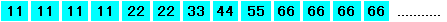 |
| WORD (2バイト) | 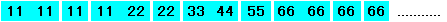 |
| DWORD (4バイト) | 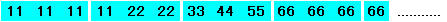 |
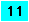
は、1バイトに相当します。
| 連長（一致系列長） | 不一致系列長 |
|---|---|---|
表現（記述） | 表現（記述） | |
BYTE1バイト | 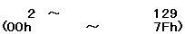 | 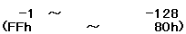 |
WORD2バイト | 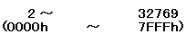 | 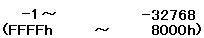 |
DWORD4バイト | 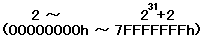 | 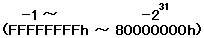 |
図1.2 ランレングス／不一致系列処理
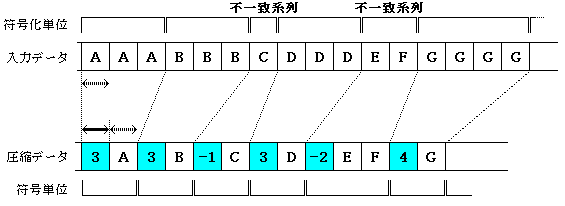
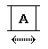 | ・・・・一致系列値、または不一致系列値(非圧縮データ) |
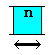 | ・・・・連長、または、不一致系列長。 ・・・・連長幅。処理単位と等しい。 |
★PROGRAMMER'S GUIDE
★圧縮伸張ライブラリ